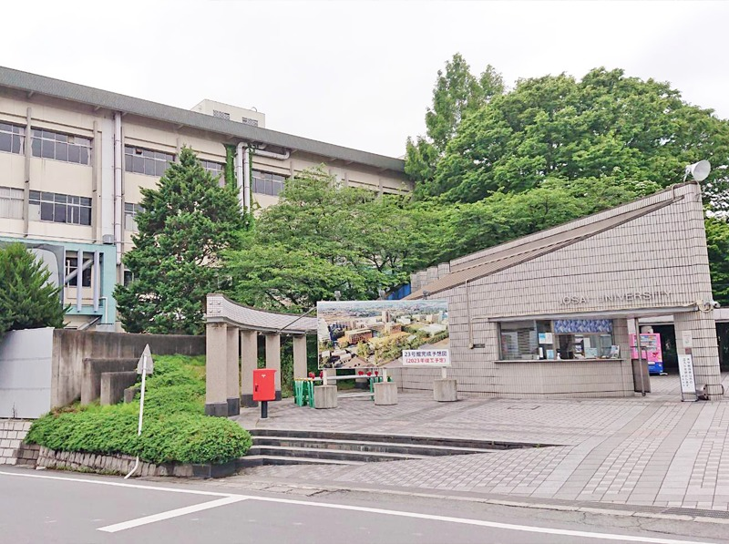

白井からのおすすめ
ここからは、私がおすすめするYoutuber(チャンネル)を紹介していきます。
- ベースを学びたい、または聴きたい方
-
「OKbass」さんの動画をご覧ください。


このページでは、白井瑛大のことについて紹介していく
自己紹介ページとなっております。
予めご了承ください。
高校は筑波大学付属坂戸高等学校に通ってました。
2年生からは、2系に入り理工業系の勉強をしました。プログラミング、Excel、CAD、金属の切削などについて学習しました。
部活は、アンサンブル部に所属していました。（軽音楽のようなものです）担当は、ベースと音響です。その頃の経験をいかして、現在もミキサー、ダイナミックマイク、スピーカーなどをPCと接続し、使っています。
大学は、城西大学の経営学部マネジメント総合学科に所属しており、現在2年生です。
ここからは、私がおすすめするYoutuber(チャンネル)を紹介していきます。